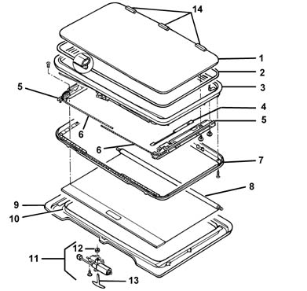
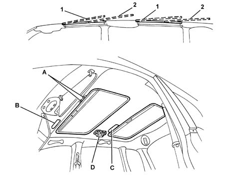

Introduction - SUN ROOF AND HOOD
- Path
- Descriptions > 70 FITTINGS > 7030 SUN ROOF AND HOOD > Introduction - SUN ROOF AND HOOD
- Kind
- system description
- Applies to
- all engines; all production periods
- Interactive page
- https://sloeber94.github.io/elrnDB-fMltpl/en/#/2892460
Applies to: all engines; all production periods
Thermal tinted glass
Coloured or bronzed glass to limit the passage of infrared light and solar rays.
Drive cable
Flexible rack which, moved by the electric motor pinion, synchronously drives the pads to which the roof is anchored allowing movement.
There are two sun roofs, both the same size, by the front and rear seats, in order to ensure the optimum intake of outside air into the passenger compartment.
The sliding element is made from thermal tinted glass to allow a reduction in the transmission of light and energy.
There is a sun blind on the inside which can be placed manually into two positions - open or closed.

1, Transparent section 2, Seal 3, Upper frame 4, Locking hook 5, Sliding guide 6, Drive cable 7, Lower frame 8, Sun blind 9, Lower cover 10, Roof hatch seal 11, Electric motor 12, Toothed pinion 13, Key for emergency manoeuvre 14, Wind deflectors (for front roof only)
The two sun roofs are electrically operated. The control switches (A) for each of the two sliding roofs is next to the front courtesy light in the passenger compartment.
Pressing the switch operates the electric motor, by means of a control unit, which moves the two drive cables at the ends of which the sun roof is connected. The movement of the drive cables causes the movement of the roof along the fixed guides.
This type of sun roof does not require water drainage ducts because, when closed, the seal does no allow water to enter inside the sun roof frame.
The following movement is achieved by operating the control switch:
- gradual raising of the rear (1) of the transparent section until the spoiler position;
- movement of the sliding section (2) from this position to the rear end of travel position.
The operations are carried out in reverse to close the roof.
If there is a failure with the electrically operated device, the motor can be operated manually, using a special emergency key, after having removed the flap (B or C) which gives access to the motor concerned.

A, switches B, front motor access flap C, rear motor access flap D, rear motor control unit 1, lifting of sliding panel 2, movement of sliding panel
SAFETY CONTROL UNIT
The electronic control unit for the rear roof includes a safety function: whilst the roof is closing, the movement is interrupted and reversed, by means of a Hall effect sensor located on the motor, if an obstacle is encountered.
This function makes it possible to stop the closing of the roof if an opposing force of more than around 1 kg (e.g. a finger, hand) is encountered.
1) Turn the key to the ON position
2) Press the rear sun roof button in the "opening" position until the roof is completely open and keep it pressed for at least 3 seconds.
3) Press the same button in the "closing" position and keep it pressed for at least 3 seconds after the rear roof is closed.
When this procedure has been carried out the safety function is operational.